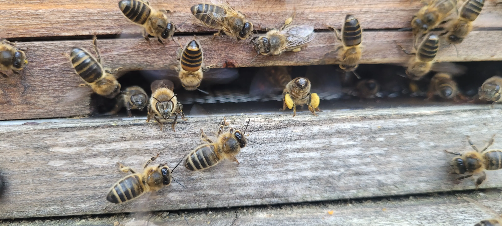

Entrance behaviour
Bees Fanning at the Hive Entrance – What It Means
Last updated: 1 May 2026
Bees fanning at the hive entrance is usually normal and useful colony behaviour. Worker bees use their wings to move air through the hive, spread colony scent, manage temperature and help regulate humidity while nectar is being processed.
Fanning can look unusual if you have not seen it before. Bees may stand still with their wings vibrating rapidly, sometimes facing the same direction or raising their abdomens slightly. In most cases, they are not in distress; they are helping the colony manage its internal conditions.
The key is to read the fanning alongside the wider behaviour at the entrance. Calm fanning in warm weather is usually normal. Fanning combined with fighting, dead bees, extreme heat, robbing or sudden colony weakness needs closer attention.
What does fanning look like?
Fanning bees often stand at or just inside the entrance with their wings moving quickly. They may stay almost motionless while the wings vibrate, and several bees may line up together to move air in or out of the hive.
Some bees may raise their abdomen slightly while fanning. This can be linked with scent fanning, where bees release Nasonov scent to help other bees locate the entrance or rejoin the colony after disturbance.
Fanning is often concentrated at the entrance, but it may also happen across the landing board, under the floor, around gaps or near the top of the hive depending on airflow and hive setup.
Common reasons bees fan at the entrance

Bees fan for several reasons. The most common are ventilation, heat control, humidity control and scent communication. During warm weather or a nectar flow, the colony may need to move large volumes of air through the hive.
After an inspection, hive move, swarm collection or nuc installation, bees may fan to help the colony reorganise and guide returning bees to the correct entrance.
Fanning can also appear when a colony is settling after disturbance. If the bees are calm and returning normally, it is usually not a concern.
Ventilation and cooling
On warm days, bees fan to help regulate the hive temperature. This airflow helps protect the brood nest and supports the colony’s ability to maintain a stable internal environment.
Fanning may appear alongside bearding, where bees gather outside the hive to reduce crowding and heat inside. Together, these behaviours help the colony cope with warm or humid conditions.
If the hive is in full sun, very crowded or poorly ventilated, fanning may be more noticeable. That does not automatically mean there is a problem, but it is worth checking space and ventilation at the next suitable inspection.
Scent fanning and orientation
Bees can fan scent from their Nasonov gland to help other bees find the hive entrance. This is often seen after disturbance, when bees are returning to a hive, or when a colony is settling into a new box.
Scent fanning may be especially noticeable after a swarm has been housed, after bees have been shaken into a hive, or after a nuc has been installed. The behaviour helps create a clear “this is home” signal for other bees.
This is different from bee orientation flights, where young bees fly in front of the hive to learn landmarks.
Fanning after moving a hive or adding bees
If a hive has been moved, a nuc installed, or bees added to a box, fanning near the entrance is often part of the settling process. Bees may be helping others locate the correct entrance and re-establish the colony scent.
This can be reassuring if the bees are otherwise calm and entering the hive normally. The behaviour should reduce as the colony settles and bees learn the entrance position.
If the activity is frantic, includes fighting or bees are trying to enter several different gaps, check for robbing, queen issues or poor hive setup.
Fanning during nectar processing
During a nectar flow, bees bring nectar into the hive with a high moisture content. To turn it into honey, the colony must remove moisture. Fanning helps move damp air out of the hive and supports the ripening process.
This type of fanning is usually a good sign. It often happens when the colony is strong, forage is coming in and bees are actively working supers or brood box stores.
If fanning increases during a strong flow, also check whether the colony has enough space. A crowded colony that is processing nectar may need additional super space.
When fanning is normal
Fanning is normally harmless when it happens on warm days, after inspections, during nectar flows, after a hive move, when a nuc is settling, or while young bees are orientating.
If the colony has steady entrance activity, no fighting, no unusual dead bees and no signs of distress, fanning is usually part of normal colony management.
The best response is usually to observe rather than interfere.
When to be concerned
Fanning needs closer attention when it appears with other warning signs. Heavy fanning with severe bearding in extreme heat may suggest the colony is working hard to cool the hive.
Fanning with fighting, wax debris, darting bees or wasps at the entrance may point to robbing behaviour. Fanning with dead bees, crawling bees or sudden colony decline should be checked alongside dead bees outside the hive and bees crawling on the ground.
If the colony becomes suddenly quiet after heavy activity, inspect when conditions are suitable and look for broader colony health problems.
What should you do?
In most cases, do nothing immediately. Watch the entrance for a few minutes and decide whether the activity looks calm and purposeful or chaotic and aggressive.
Check the weather, recent hive disturbance, nectar flow and colony strength. If the hive is hot, crowded or in full sun, review ventilation and available space at the next inspection.
Do not block the entrance while bees are fanning. If robbing is suspected, reduce the entrance carefully and follow robbing-control guidance rather than treating the fanning itself as the problem.
How HiveTag can help
Fanning is easier to interpret when you record the context. Weather, recent inspections, hive moves, feeding, supers and nectar flow can all explain why bees are fanning.
HiveTag can help you record entrance behaviour, weather notes, colony strength and follow-up tasks so you can spot whether fanning is normal seasonal behaviour or part of a wider pattern.
Learn more about HiveTag.
Bees Fanning at the Entrance FAQ
Yes. Bees often fan at the entrance to ventilate the hive, spread colony scent, manage temperature or control humidity during nectar processing.
They may be moving air through the hive or spreading colony scent from the entrance to guide bees home.
Sometimes. Fanning is part of normal cooling behaviour, but heavy fanning with bearding during extreme heat may suggest the colony is working hard to regulate temperature.
Not usually. Observe first and only inspect if there are other warning signs such as robbing, dead bees, distress, overheating or sudden colony decline.